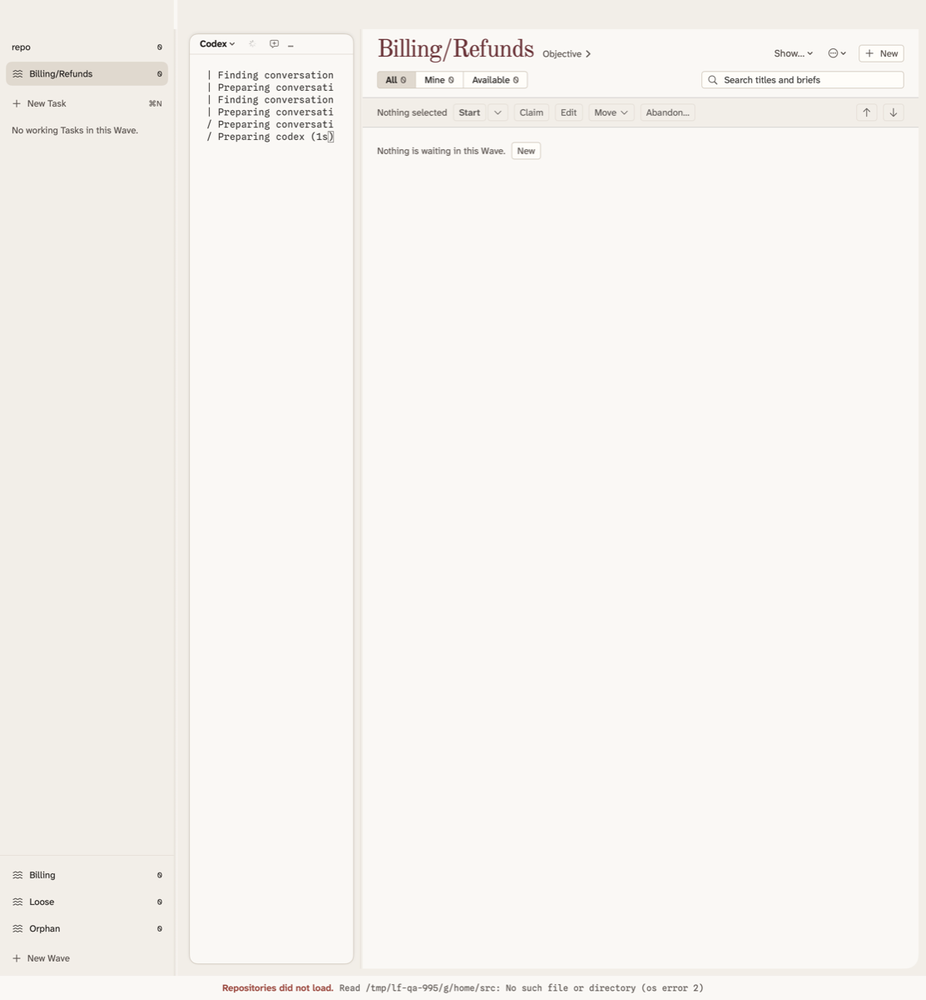
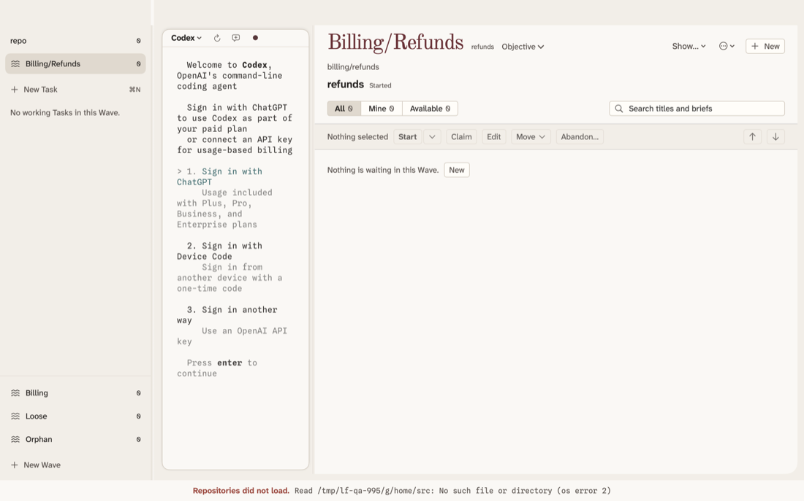

Branch lf (debug build of 8a8861d595 plus this run's fixes) on private Machines under /tmp/lf-qa-995, fresh Git repositories, no LF_* inherited, stdin closed. Installed lf (/Applications/Loopflow.app) for the returning-user home.
| Scenario | Result |
|---|---|
First visit: lf help wave | No update-project, edit-project or plan bind. Help said "Projects" (plural) for show/plan/status: fixed to "Project". |
Plan demo: create billing, billing/refunds, status, Task in refunds, move to billing, move --no-wave, back | Works. Each Wave gets one Project (proj_<wave uuid>), unique index projects_wave; tasks has no wave column; the Task lists under exactly one Wave each time. |
lf wave create commit | Commits only GOAL.md, MEMORY.md, config.yaml. |
| Rename then remove a Wave with a Task | Works; the Task moves to the repository. The local Project keeps the old Wave name (described below). |
| Connect a Linear team afterwards (origin, no login) | The removed Wave's Project got a Linear create. Fixed; re-run shows creates for live Waves and Tasks only. |
lf wave plan connect billing [project] with no login | Clear error: "No Linear credential found…"; without origin, the origin error. A real link needs a Linear login; not reached. |
| Returning user: home written by installed lf (Waves, Tasks in parent and child), opened with branch | Migration applied; every Task keeps its Wave and Project; new Task joins the child Wave's Project. |
| Second Machine over Git: clone, list, move a Task between Waves, new Wave made on the second home | Lists match on both homes; the move and the new Wave with its Project cross on lf task sync. No WARN besides one write-lock hold during migration. |
$ lf wave create keep; lf wave create gone; lf task create --wave gone 'Leftover' $ lf wave remove gone Removed Wave gone. 1 open Task moved to the repository. $ (origin + repo.tracker.linear.team QA) lf task create 'Trigger'; lf repo tracker Tracker: linear. 3 open · 0 lost. keep create · queued · No Linear credential found. … fd16e5 create · queued · No Linear credential found. … f2a325 create · queued · No Linear credential found. …
Before the fix the same run listed a create for the removed Wave's Project too. uncreated in tracker_actions.rs now skips retired Waves; its test seeds a removed Wave.
lf wave show|plan|status, lf desktop plan help, the server schema description, docs/dev/data.md and swift/README.md say a Wave's one Project..lf/qa/tracker.md: the tasks.wave_id/task_wave paragraph described the superseded model; replaced with how to drive this one.cargo test -p loopflow-storage --lib a_project_made_here_is_created: pass (me).cargo test -p loopflow --lib server::schema::tests:: after regenerating server_schema.json: 8 pass (me).connect, and an issue import into a linked Wave: needs a Linear login on a private home. Linear sync QA runs on the Machine's own store, which this branch's migration would change.Project scratchpad (local) on Wave sandbox). No Project rename exists; making it follow is a product call (scratch/questions.md). Fixed in slice 3; checked in the second run.create already queued for a Wave's Project before removal likely still sends (read from code, not run). Fixed in slice 3; checked in the second run.billing/refunds, the branch refunds; upgraded homes keep the old name.~/.lf/chapter-locks/: kept on purpose so released callers share the lock files.lf config set --shared repo.tracker.linear.team prints "saved; DomainAction" (installed lf too; not this change).Branch lf at 39b4b965b3 plus this run's fix, private Machine /tmp/lf-qa-995/e, fresh repository, then a bare origin and repo.tracker.linear.team QA with no Linear login so every tracker action stays queued and readable.
| Scenario | Result |
|---|---|
| Rename an unlinked Wave with a Task (no tracker) | Project follows: Project payments (local) · started; projects.project_name and slug both payments. The Task stays in it. |
| Rename in a connected repository, create still queued | The create keeps its snapshot (ledger); one name action queues behind it. A second rename retires the first ("superseded by a later save"). |
| Remove a Wave with a Task, create and name queued | Both Project actions retire ("its Wave was removed"); the Task moves to the repository and gets a project action. |
| The moved Task's own queued create | Before the fix it still named the removed Wave's Project, which Linear will never have: remote_project fails on it every pass, so the Task never reaches Linear. Fixed, below. |
Remove child Wave pay/refunds with a Task | After the fix: Task moves to pay; its create names pay's Project, which the drain creates first. |
$ lf wave rename ledger books ; lf repo tracker Tracker: linear. 4 open · 0 lost. payments create · queued · No Linear credential found. … books create · queued · … d37111 create · queued · … books name · queued · … $ lf wave create pay/refunds ; lf task create --wave pay/refunds "Partial refund" $ lf wave remove pay/refunds Removed Wave pay/refunds. 1 open Task moved to pay. 1 Project stays readable in history. .lf/wave/pay/refunds removed on the main checkout. tracker_actions after (fixed build): 9 create retired refunds' Project its Wave was removed 10 create queued task 2b9a48 task_project = pay's Project (before the fix: refunds' Project) 11 field queued task 2b9a48 task_project = pay's Project
retire_wave_in (storage, under retire_waves) retires the Project's queued actions and points any queued Task create naming that Project at the Task's current Project. Test: tracker_actions::tests::a_task_moved_out_of_a_removed_wave_is_created_in_its_new_project.
cargo test -p loopflow-storage --lib tracker_actions::tests::: 12 pass (me).cargo clippy -p loopflow-storage --all-targets -- -D warnings: clean (me).Renaming a linked Wave through the CLI: linking needs a Linear login on a private home; the storage test covers it. Sending to Linear at all, same reason.
project action behind its create (sends the same value). Harmless.lf wave rename commits as lf wave rename: billing, without the new name (wave_lifecycle/recovery.rs, not this branch).scratch/questions.md).Branch lf at 6539d80aae, private Machine /tmp/lf-qa-995/f, fresh repository, then a bare origin and repo.tracker.linear.team QA with no Linear login. No Linear login, so the link was written into the store as the tracker read would write it (projects.external_project_id plus a tracker_projects row with a URL); everything after that went through the CLI.
| Scenario | Result |
|---|---|
| Rename an unlinked Wave with a Task, no tracker | Project follows: Project ledger (local) · started; Task stays. |
lf wave remove of an empty Wave | No Projects line any more: "Removed Wave scratchpad. / scratchpad has no Tasks or Sessions." |
| Status of a linked Wave | (linked) and the URL on the next line; --json carries url and tracker_id. |
| Rename a linked Wave | Local Project renamed (name and slug); one field action {"field":"project_name","value":"journal"} queued, shown under the Project in lf wave status and in lf repo tracker as journal name · queued. |
| Remove that linked Wave | Its queued rename retires; the Task moves to the repository and gets a project action. |
Removed Wave (scratchpad) after connecting the tracker | No create for its Project. |
| Desktop Wave header | Not seen: screencapture answers "could not create image from display" in this run. scripts/test_desktop.sh --filter 'WaveDetailReadingTests|WaveProjectsViewTests|DTOFixtureTests|WorkModelTests|RemoveWaveSheetTests': 106 pass, including "the Wave header names its Project and links it once the tracker has a URL". |
$ lf wave status ledger # after writing the link
Project ledger (linked) · started
https://linear.app/qa/project/ledger-abc123
$ lf wave rename ledger journal
Renamed Wave ledger → journal
$ lf wave status journal
Project journal (linked) · started
https://linear.app/qa/project/ledger-abc123
name · queued · No Linear credential found. …
$ lf repo tracker
Tracker: linear. 2 open · 0 lost.
1b8591 create · queued · …
journal name · queued · …
Nothing needed fixing. .lf/qa/tracker.md gained how to stand up a linked Project without a Linear login.
…/ledger-abc123 under journal) until the next tracker read. Whether Linear still opens the old slug was not checked.lf wave status aligns its rows unevenly (machine unplaced, Project …); not this branch.lf config set --shared repo.tracker.linear.team prints "saved; DomainAction" (seen before; not this branch).Branch lf at cd21c7b658 plus this run's fix, private Machine /tmp/lf-qa-995/g, fresh repository with a bare origin, no tracker. An isolated Desktop bundle (com.loopflow.mac.qa995.dev, QA hook) on that Machine, driven with the screen locked; removed afterwards.
| Scenario | Result |
|---|---|
Plan demo: billing, billing/refunds, a Task in refunds, move to billing | Works. lf wave status --json has one project key ({"state":"ok","value":{…,"url":null}}), no list. The Task lists under billing only after the move. |
| A Wave with no Project, arriving from another Machine's plan ref | Project none; JSON "value": null; lf plan list --json the same. Its first Task makes the Project (Project orphan (local) · started). |
| Desktop: open a Wave's backlog (sidebar click) | Before the fix: name and Objective only; the Wave's Project appeared nowhere on the page people land on (main showed it there). Fixed, below. |
| Desktop after the fix: unlinked, then linked (link written into the store, relaunch) | refunds beside the title; the Objective disclosure shows the goal, then the Project with its status. Linked, the label is a Link (view test); it draws in actionInk, which this theme sets to textSecondary, so it looks like the plain label. |


$ lf wave status loose # pushed by another Machine, no Project
loose ready
Project none
$ lf wave status loose --json | jq .project
{"state": "ok", "value": null}
WaveHeaderProject, a link when the URL is known; "Project unavailable." on a failed read), its Objective detail shows the Project's status and tracker sync, and lf desktop capture -p backlog's heading names it. The merge that removed chapters had dropped all three with currentProject.BacklogViewTests/backlogRendersItsRowsAndOpensOneBrief asserts the linked label and the heading line.scripts/test_desktop.sh --filter 'BacklogViewTests|WaveDetailReadingTests|DTOFixtureTests|WorkModelTests': 115 pass (me).lf desktop capture -p backlog against the QA bundle: "No Desktop window shows repo_…" while the window showed the repository; the heading is covered by the test above.actionInk = textSecondary); nothing says it opens Linear until hover. Design-system choice, not this branch.lf task move prints task_…: membership saved, a raw id and internal word (same on main).No code changed since the fourth run (the binary is still cd21c7b65). This run upgraded a copy of this Machine's own store (710 MB, 134 migrations, written by installed lf 5d5bf92c7, an ancestor of the branch) at /tmp/lf-qa-995/h, and read it from the real ~/src/loopflow checkout under sandbox-exec with IP network and writes to the checkout and ~/.lf denied, so nothing reached Linear, GitHub or the real store. Installed lf read the real store beside it.
| Scenario | Result |
|---|---|
| First open of the copy with the branch | remove_chapters applied with a backup, in one 9.1 s write-lock hold (WARN write_holds held_seconds=9.07). Every agent on the Machine waits that long once at upgrade. |
| Invariants after the migration | 63 live Waves, 0 without a Project, 0 with two, 0 Projects without a Wave; projects_wave unique; tasks has no wave column; 1,091 of 1,584 Tasks in a Project, none dangling; foreign_key_check clean. coverage keeps one Project with 86 Tasks, infrastructure 478. |
lf wave status on infrastructure, product, growth, intelligence: branch vs installed | Same Tasks per Wave (49, 7, 0), except infrastructure: branch 95, installed 94. The extra is LOO-1081 (idle, has a worktree), which installed lf task show calls "not registered" though its row is in the store; the branch shows it. Installed-side skew, not this branch. |
| Project lines on real Waves | Project Infrastructure — Chapter demo-20260924 (linked) · started. Six kept Projects carry chapter names (infrastructure, product, academy, experiments, release, growth); all six are linked, so the name is Linear's. No URL line until the next tracker read fills tracker_projects.url. |
lf repo tracker in ~/src/loopflow after the upgrade | Branch: spend and engbot Project creates queued. Installed already held spend's ("Wave has no Linear Initiative"); engbot (Wave from 2026-07, no .lf/wave/engbot in the checkout) is new. Upgrading this Machine makes both as Linear Projects on its first export. |
$ lf wave status infrastructure # branch, migrated copy infrastructure ready … Project Infrastructure — Chapter demo-20260924 (linked) · started LOO-715 idle — Keep Desktop alive when browser pages close during first paint … $ lf repo tracker | grep create spend create · queued · Could not read the credential. … engbot create · queued · Could not read the credential. …
Nothing needed fixing. .lf/qa/tracker.md gained the sandboxed real-store read.
connect against a real Linear Project, an import into a linked Wave: lf's Linear login is OAuth only, and using it from a copy would write to the real workspace.engbot, a Wave nobody has touched since July (and spend, already queued). Designed (scratch/questions.md); retiring engbot first with lf wave remove engbot avoids it.lf wave status and Desktop; renaming them is a Linear edit for their owner.lf 5d5bf92c7 can't find LOO-1081; not this branch, not investigated.Branch binary at 0f3ec9d6a, then rebuilt with the fix below. Private Machine at /tmp/lf-qa-s6: a fresh repository with a bare origin, lf config set --shared repo.tracker.linear.team team-qa-123, no Linear login, so every send stops at "No Linear credential found" and the queue shows what would go out.
| Scenario | Result |
|---|---|
lf wave plan connect billing 'Billing Q4' for a Wave nobody made yet, no login | Broken, fixed. Printed adding Wave billing, then the credential error, exit 1. Left behind: Wave billing registered, .lf/wave/billing committed (lf wave add: billing), and its own Project's create queued. After lf account connect linear, the next save or the server's minute sends that create and makes a Linear Project "billing" beside the one asked for, before connect is retried. A typo in the Project name (no Linear Project matches) leaves the same. |
Same, after the fix (lf wave plan connect refunds 'Refunds') | Credential error, exit 1; no Wave, no commit, no queued action. lf wave list and lf repo tracker unchanged. |
lf wave create ops, two Tasks in billing, lf task move <t2> --wave ops | One Project per Wave (proj_…, named for it); each Task's create names its Project; the move queues a task_project field action behind the create. lf repo tracker: 5 open. |
lf wave rename billing payments | Project renamed to payments; lf wave status payments lists create then name queued. |
lf wave remove ops holding the moved Task | "1 open Task moved to the repository."; ops' create retired ("its Wave was removed"), the Task's queued move retired ("superseded by a later save") and a task_project: null queued. |
lf wave remove growth holding a Task created there | The Task's queued create now carries task_project: null with title, description and the other four fields as they were (the compress's json_set). |
connect_async (rust/loopflow-execution/src/ops/linear.rs) resolves the credential, Team and named Linear Project before it adds an unknown Wave. Test: ops::linear::task_planning_tests::connect_naming_a_missing_project_adds_no_wave fails on 0f3ec9d6a (a Wave is registered) and passes now; the four other connect tests pass.
WaveProjectsView to WaveProjectSheet and its menu identifier; no behaviour changed, so the app was not launched.create; connecting it to an existing Linear Project later retires it, but only if connect runs before the first send. By design (every Wave is a Linear Project).lf config set --shared repo.tracker.linear.team … prints saved; DomainAction, a type name.Branch lf at dfdcf4b722, then with this run's fix, on private Machines /tmp/lf-qa-995/g and /h: fresh repository, bare origin, repo.tracker.linear.team QA, no Linear login, so every tracker action stays queued and readable. The Linear link was written into the store the way a tracker read would (projects.external_project_id plus a tracker_projects row with a URL).
| Scenario | Result |
|---|---|
Linked Wave billing, one open and one completed Task; lf wave status billing | Project billing (linked) · started with the URL under it. |
Offline lf wave rename billing payments | One name action queued for the linked Project. |
lf wave remove payments | "1 open Task moved to the repository. 1 completed Task stays readable in history."; the name action retired ("its Wave was removed"); the moved Task gets a project action. lf task show of the completed Task still reads it, in the removed Wave's Project, whose external ID stays until a reclaim. |
lf wave plan connect ledger <the removed Wave's Project URL> | Stops at "No Linear credential found"; no Wave, commit or action is left. |
lf wave create billing again | New Wave, new Project (billing (local)), its own create queued; the removed Wave's Project keeps its link. |
Unlinked Wave docs in the connected repository: Task created, completed, Wave removed | Before the fix: the completed Task's create and complete stayed queued, naming the removed Wave's Project, whose own create had just retired. The drain sends the Task create anyway (the Project is not among those being created) and remote_project fails on the unbound Project every pass, so lf repo tracker lists them as open forever. uncreated would also queue a retired Task create again on the next pass. |
| Same, after the fix | lf repo tracker: 1 open (the live Task's create); the completed Task still reads as completed. |
| Wave removed with a completed Task before the repository connected a tracker | After the fix nothing is queued for that Task. Before it, uncreated gave it a create naming a Project that would never exist. |
$ lf wave create old; lf task create --wave old 'Old done work'; lf task complete 933710; lf wave remove old Removed Wave old. 1 completed Task stays readable in history. $ lf config set --shared repo.tracker.linear.team QA # committed, pushed $ lf wave create docs; lf task create --wave docs 'Write changelog'; lf task complete 71cc3a; lf wave remove docs Removed Wave docs. 1 completed Task stays readable in history. $ lf task create 'Trigger a pass'; lf repo tracker Tracker: linear. 1 open · 0 lost. d0ba3d create · queued · No Linear credential found. … $ lf task show 71cc3a # Write changelog completed
A Task that never reached the tracker and stays in a removed Wave's Project the tracker does not hold is stranded (STRANDED_TASK in rust/loopflow-storage/src/sqlite/tracker_actions.rs). Its queued actions retire when its Wave is removed (retire_wave_in) and when a reclaim releases the removed Wave's link (link_wave_project_in), and uncreated queues it no create. It stays readable here. Tests: tracker_actions::tests::a_task_left_in_a_removed_waves_project_is_not_created_in_the_tracker (new) and the reclaim case added to linear_events::tests::reclaiming_a_removed_waves_project_keeps_completed_history_available. Both fail with the rule disabled and pass with it.
Also: migration_runner::tests::provider_columns_preserve_released_observations_and_local_execution failed on HEAD (InvalidColumnType(5, "initiative_ids", Null)). An Initiative sweep had removed initiative_ids from its seed, which stands for a released store. The seed is back as released lf wrote it, and the test passes. Storage tracker, linear_events and migration tests: 166 pass; clippy is clean.
lf fixes the API URL and verifies TLS with the macOS platform verifier, so a stand-in needs a keychain trust change, and lf's Linear login is OAuth into the real workspace. Execution's simulated-Linear tests cover it: connect_can_claim_another_waves_project_only_after_removal, connecting_after_an_offline_rename_keeps_the_linear_projects_name, a_lost_reply_distinguishes_retired_and_unlinked_projects_from_no_project and connect_naming_a_missing_project_adds_no_wave pass.scratch/questions.md; the alternative is a team issue with no Project.connect for a missing credential ends "; inspect the affected work before retrying", though nothing was touched.lf config set --shared repo.tracker.linear.team … prints saved; DomainAction.Branch lf at 0812f501d8, then with this run's help fix, on a private Machine /tmp/lf-qa-995/r. The returning state was written with the installed lf (0.16.0+250e266b4, this branch's base), which still has chapters. Three repositories: repo (Linear team, no login), repo2 (Git origin, no tracker), repo3 (Asana team, no login).
| Scenario | Result |
|---|---|
Installed lf: Wave billing with its Project, a second Project billing — Chapter 2 arriving from another Machine's plan ref, two Tasks in the first, then the Linear team set. Queue: one Project create (first Project), three Task creates. | Ready to upgrade. |
Branch on that home: lf wave status billing, lf repo tracker | Project billing — Chapter 2 (local) · started (the newest started one is kept). Both Tasks list under billing, are in the kept Project, and their queued creates now name it (task_project rewritten in value_json). The dropped Project's create retired with it. |
A save, then lf wave sync billing | Exits 0, shows each Task's queued create and its reason. No create is queued for the kept Project: uncreated skips a Project another Machine stamped. With a login, the Task creates would name a Project this Machine never links. Written up in scratch/questions.md; not fixed (it is a choice between two designs). |
lf wave create ledger; lf wave sync ledger (Linear, no login) | Project ledger (local) · started, then create · queued · No Linear credential found…; JSON carries the action under project.value.sync.actions. Exit 0. |
Asana-only repository: lf wave create ops, a Task, lf wave sync ops | Exit 0 with the Project and Task creates queued, "No Asana credential found". No Linear Team demanded (slice 9's bug). |
No tracker: lf wave sync docs | Exchanges the plan ref, shows the Project and Task. Exit 0. |
A second Project for docs pushed by an older writer (slice 10) | Stored beside it. lf wave status docs still shows docs (local); a new Task joins the Wave's own Project. One skipped an unknown plan field WARN (krs). |
| A Task the older writer filed in its Project | Lists under docs (lf wave status, lf task list --wave docs); lf task show gives wave docs. |
lf wave rename docs guides | Only the Wave's own Project is renamed; the older writer's keeps its name. |
lf wave remove guides (one completed Task, two open, one of them in the older writer's Project) | "2 open Tasks moved to the repository. 1 completed Task stays readable in history." Both open Tasks have no Project; the completed one still reads wave guides. |
lf wave sync nope | "wave 'nope' is not registered…" exit 1; same text as the installed lf. |
$ lf wave status billing # released home, first branch command
Project billing — Chapter 2 (local) · started
b3f82c unstarted — Refund ledger ready
create · queued · No Linear credential found. Run `doppler run -- lf account connect linear`.
2e54b5 unstarted — Chapter two work ready
create · queued · No Linear credential found. …
$ sqlite3 copy.db "select kind,project_id,task_id from tracker_actions"
create||task_b3f82c… create||task_2e54b5… create||task_b38681… # no Project create
lf wave sync's help said a Wave whose Project links no Linear Project "shows its local planning". Since slice 9 it sends the Wave's queued changes to whichever tracker is configured. It now reads: "Send one Wave's queued tracker changes and read its tracker Project, then show its status; with no tracker, exchange the repository's plan".
lf, see the seventh run). Execution's planning_action_tests::a_released_queue_delivers_after_its_chapter_projects_collapse covers the delivery after upgrade.WorkModelTests|BacklogViewTests (slice 6, 58 pass).scratch/questions.md).Branch lf at 913513f70a on private Machines under /tmp/lf-qa-995/s, with a Linear Team set and no login, so every action stays queued and readable. The returning home was written with the installed lf (0.16.0+62a368e5c, the branch's base), which still has chapters.
| Scenario | Result |
|---|---|
Run 8's upgrade case again. Installed lf: Wave billing with its Project and two Tasks. A second Project, billing — Chapter 2, arrives on another Machine's plan ref (home_0123…, later at). Then the Linear Team is set and a save runs. Queue: billing create plus three Task creates. | Ready to upgrade. |
Branch on that home: lf wave status billing, a save, lf repo tracker | Project billing — Chapter 2 (local) · started, now with create · queued under it. lf repo tracker: 5 open, including billing — Chapter 2 create. Both Wave Tasks' queued creates name proj_9999…, the kept Project. Run 8's worst finding is gone. |
lf wave sync billing | Exit 0, shows the Project's and Tasks' queued creates. |
Fresh, two Machines m1 and m2 on one bare origin: lf wave create ledger and a Task on m1, then sync. Clone on m2 and list (the Wave arrives). Set the Linear Team on m2, push, pull on m1, save on each. | Both homes queue a Project create for the same proj_04886c93… (the Wave's UUID), stamped by m1. m1 also queues its two Tasks, and m2 only its own. Before slice 11, m2 queued no Project create. |
Real store (~/.lf/loopflow.db, read-only): unlinked Projects of live Waves stamped by another Machine | One, qa-wave in /private/tmp/lfq63/repo, a QA leftover. Dropping the stamp check adds no create for a real repository. |
$ lf wave status billing # released home, branch binary
Project billing — Chapter 2 (local) · started
create · queued · No Linear credential found. Run `doppler run -- lf account connect linear`.
245335 unstarted — Refund ledger ready
ba820b unstarted — Refund webhooks ready
== m2 (Wave made on m1)
Tracker: linear. 2 open · 0 lost.
ledger create · queued · No Linear credential found. …
cfb79c create · queued · No Linear credential found. …
[('create', 'proj_04886c934e5e49b2ac684edaecbe83d5')] # same id on m1
Nothing. The run found no break.
lf has no tracker stand-in (seventh run). Execution's a_wave_project_another_machine_created_in_linear_is_bound_not_duplicated and …_mirrored_in_asana_is_bound_not_duplicated pass. The Linear stand-in refuses a reused id ("an entity with this id already exists"), so the test fails without the new fallback. Storage every_unbound_project_of_a_live_wave_is_created_in_the_tracker passes.find_project) after every error, a rate limit included. That costs a request, not correctness: the original error is still what gets recorded.Branch lf (debug build of b34f96d4d2 plus this run's fixes) on private homes under /tmp/lfq12, fresh repositories with a local bare origin, no LF_*, stdin closed. Installed lf for the upgrade home. No Linear or Asana login: no real tracker Project was made.
| Scenario | Result |
|---|---|
No tracker: lf wave create billing | As before: committed, Project billing (local) · started. |
Linear team set, no login: lf wave create ledger | Exit 1, "wave/ledger has no tracker Project yet: No Linear credential found…". The Wave is recorded and committed, its Project unbound; no Project row in tracker_actions. The message had "..": fixed. Nothing anywhere said billing or ledger had no Linear Project (lf repo tracker: "Nothing open"): fixed in lf wave status. |
Rerun create, lf wave sync ledger, lf wave plan connect ledger | Each exits 1 with the credential error; nothing new queued. |
lf task create --wave ledger … into the unbound Project | Saved, "pending Linear sync"; the Task's create stays queued with the credential error. Whether the drain makes the Project first needs a login (execution tests cover it). |
Nested lf wave create ledger/refunds | Same failure; Project refunds, hint names ledger/refunds. |
Asana team '1209' | "No Asana credential found"; hint says "not in Asana yet". |
Rename billing→payments, remove asana-w (unbound) | Project renamed with the Wave; no Project actions left in tracker_actions. |
Desktop's path: served wave.create on the private server | Same message, code outcome_unknown, with "; inspect the affected work before retrying" appended (generic for served write errors; left, see questions). |
Upgrade: installed lf home with team, Wave spend and a Task, opened by the branch | Before: spend create · queued plus the Task. After: the Project create retired ("Wave Projects are created by lf wave create, plan connect or sync"), the Task's stays. lf wave status spend now says how to make it. |
$ lf wave create ledger/refunds
Error: wave/ledger/refunds has no tracker Project yet: No Linear credential found. Run `doppler run -- lf machine login linear`. Run `lf wave create ledger/refunds` again to make it.
$ lf wave status ledger/refunds | grep -A1 Project
Project refunds (local) · started
not in Linear yet; `lf wave sync ledger/refunds` makes it
$ lf wave status billing | grep -A1 Project # made before the team was set
Project billing (local) · started
not in Linear yet; `lf wave sync billing` makes it
lf wave status and the roadmap print "not in <tracker> yet; `lf wave sync <wave>` makes it" for a live Wave whose Project has no tracker id in a connected repository (waves.rs::print_project).local_planning:: tests slice 12 broke (connected wave add now fails offline): fixtures get the team after the Wave; the two wave_sync_* tests of the deleted queued create are rewritten for the synchronous one. local_planning:: 30/30, Wave CLI suites 41, documented_commands:: 4 pass; clippy clean.A real tracker Project create, lost reply, and the drain making an unbound Project before a Task send: they need a Linear or Asana login and would make real Projects in a shared workspace. Desktop UI not opened.
outcome_unknown "inspect the affected work before retrying" next to a message that says exactly what to rerun.Branch lf (debug build of 5d03840e1a) on a private home under /tmp/lfq13, a fresh repository with a local bare origin and a Linear team in .lf/config.yaml, no Linear login, no LF_*, stdin closed. No real tracker Project was made.
| Scenario | Result |
|---|---|
lf wave create ledger offline | Exit 1; the retry now names lf wave sync ledger, the verb lf wave status prints. Wave recorded, Project unbound. |
Nested lf wave create ledger/refunds | Same, naming lf wave sync ledger/refunds. |
Three Tasks into the unbound Project, then lf task edit 936406 --rank 0 | Edit succeeds; lf task list --wave ledger reads Gamma, Alpha, Beta. tracker_actions holds the three Task creates and no Order: the order waits in the store for the binding, as slice 13 built. |
lf wave sync ledger offline | Exit 1, credential error; local order unchanged, nothing new queued. |
Desktop's path: served wave.create on the private server | outcome_unknown, "… Run `lf wave sync payouts` to make it.; inspect the affected work before retrying". |
$ lf wave create ledger Error: wave/ledger has no tracker Project yet: No Linear credential found. Run `doppler run -- lf machine login linear`. Run `lf wave sync ledger` to make it. $ lf task edit 936406 --rank 0 task_936406f616de45b4b28e802d93205d37: updated create · queued · No Linear credential found. Run `doppler run -- lf machine login linear`. $ lf task list --wave ledger 936406 · — · Gamma 2a874e · — · Alpha 4abb78 · — · Beta $ lf repo tracker Tracker: linear. 3 open · 0 lost. 2a874e create · queued · No Linear credential found. … 4abb78 create · queued · … 936406 create · queued · …
Nothing; the reachable path behaved as built.
linear_events:: 10 pass after the compress, including binding_an_unbound_project_queues_the_order_its_tasks_took.local_planning::task_creation_and_edits_save_offline_in_both_connection_modes passes.The binding itself (create, sync, connect or the drain giving the Project its tracker id) and the Order reaching Linear: no Linear or Asana login on this Machine (none in Doppler either), and it would make real Projects in a shared workspace. The upgrade home was not rebuilt; slice 13 changes no migration. Desktop UI not opened.